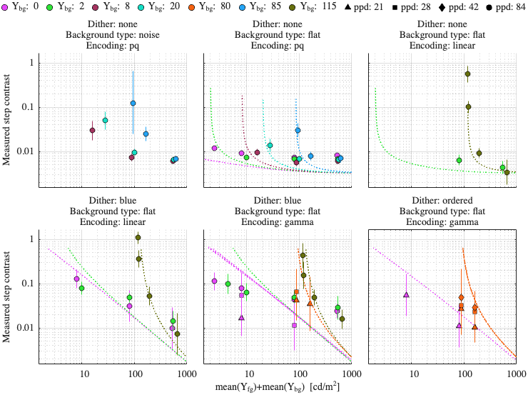

Fitting config: dither, model: transducer_freq_pool
Fitting error (RMSE): 3.2464
Model parameters
p.beta = 1.05821; p.beta_cc = 1; p.gs_num = [ 0.467928 0.2 0.965043 ]; p.noise_params = [ 0.5 0.5 0.5 0.5 0.2 0.5 ]; p.dither_mask_params = [ 0.00322853 1.03993 1.01272 ]; p.blue_dither_params = [ 32.4093 190.516 2.60506 2.43954 ];
Dataset: [ar2025]
Scaling factor: 0.282378

Dataset: [kim2020]
Scaling factor: 1.13375